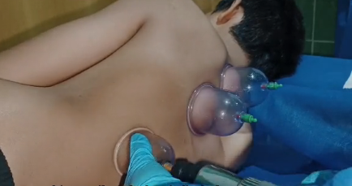
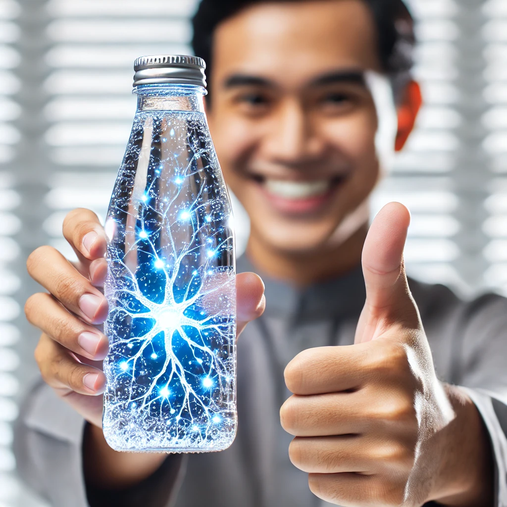

Perkhidmatan Kami
Terapi Bekam
Kami menyediakan terapi bekam untuk mengurangkan kesakitan, melegakan tekanan, dan detoksifikasi badan dengan selamat dan berkesan.
Spray Energy Dhuha

Energy Dhuha adalah semburan semulajadi yang membantu menyegarkan badan, merawat masalah kulit, dan meningkatkan kesihatan mata.
Air biodisc
Air yang boleh: menambah oksigen dalam badan, , meningkat tenaga , menyahtoksin dan kumuhan , membalikpulih sel dalam badan dan keserasian dengan Molekul air